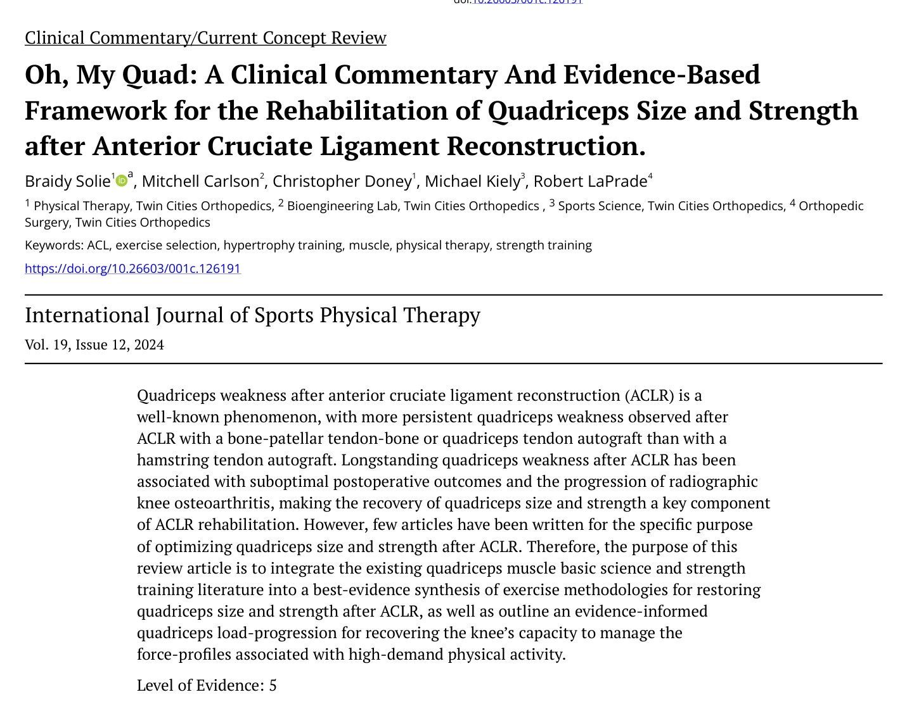
🔖原文首页（IJSPT 2024 年第 19 卷第 12 期）
📚 文献卡片
▪ 英文原题：Oh, My Quad: A Clinical Commentary and Evidence-Based Framework for the Rehabilitation of Quadriceps Size and Strength after Anterior Cruciate Ligament Reconstruction（ACL 重建术后恢复股四头肌体积与力量：临床评论与循证框架）
▪ 作者：Braidy Solie, DPT · Mitchell Carlson · Christopher Doney · Michael Kiely · Robert LaPrade, MD, PhD
▪ 机构：Twin Cities Orthopedics 物理治疗部、生物工程实验室、运动科学部与骨科（美国明尼苏达州）
▪ 期刊：International Journal of Sports Physical Therapy（IJSPT）
▪ 年卷期：2024;19(12):1600-1628
▪ PMCID：PMC11611527
▪ 文章类型：临床评论 / 当前概念综述
▪ 证据级别：5 级
▪ 关键词：ACL · exercise selection · hypertrophy training · muscle · physical therapy · strength training
ACL 重建（ACLR）术后股四头肌无力非常普遍。用骨-髌腱-骨（BPTB）或股四头肌腱（QT）自体移植物时，部分由于取腱造成的关节源性肌肉抑制（AMI），无力比用腘绳肌腱（HT）更持久。
长期股四头肌无力与膝关节生物力学异常、康复进展慢、重返运动率和满意度低有关，还与影像学膝骨关节炎进展相关。处理 AMI 很重要，但要真正恢复运动表现，还需要专门刺激肌肉体积（肥大）和力量的训练——而专门讨论这个问题的文章很少。
本文把股四头肌基础科学和力量训练文献整合起来，给出 ACLR 术后恢复股四头肌体积和力量的分阶段负荷进阶框架，最终让膝关节能承受高强度运动的受力。
| 阶段 | 时间（参考） | 开链（OKC）重点 | 闭链（CKC）重点 |
|---|---|---|---|
| 术后即刻期 | 0～3 周 | 股四头肌收缩（屈膝 20°～45°）、节拍器加速、直腿抬高、短弧伸膝；45°～60° 次最大退让型等长 | 坐位弹力带末端伸膝、俯卧股四头肌收缩 |
| 过渡期 | 3～8 周 | 低负荷+血流限制（BFR）练到接近力竭；60°～90° 推/克服型等长 | 站立末端伸膝；双腿 → 分腿 45°～60° 长时间退让型等长（每天 2 次） |
| 早期力量期 | 8～12 周 | 45°～100°+ 等长/大负荷慢速；最大等长能撑 20～45 秒后开始离心准等长（EQI） | 高稳定的单腿器械；加楔形垫；45°～90°+ 接近力竭的退让型等长 |
| 传统力量期 | 12～24 周 | 伸膝机 EQI；大负荷慢速（>70%～80% 1RM） | 单腿大屈膝力矩；腿举 EQI；45°～120°+ 大负荷慢速（每组 ≤4～6 次） |
| 离心/爆发力期 | 24 周以后 | 离心专项（>100% 向心 1RM，“上 2 下 1”） | 深蹲到 120°+；速度训练、增强式、高速跑 |
一句话概括：开链、闭链两条线同时走，主要靠“屈膝角度”和“外部负荷”逐级进阶；为了长肌肉，要选稳定的单腿动作，在较长肌肉长度下练到接近力竭。
• 股四头肌由股直肌、股外侧肌、股中间肌、股内侧肌组成，共同经髌骨和髌腱止于胫骨粗隆，主要作用是伸膝（图 1）
• 股直肌起自髂前下棘，是唯一跨两个关节的头，兼屈髋和伸膝；它有纵行的肌内腱，在屈髋+伸膝的复合动作（如跑步摆动中期）中储存和传递能量。想重点练股直肌，就选直腿抬高、高速跑、踢；“伸髋+伸膝”（如腿举）会降低股直肌参与
• 股神经运动支呈区域性分布，可选择性募集：较长肌肉长度下伸膝偏向远端区域；较短长度和/或屈髋+伸膝偏向近端区域
• 开链任务（伸膝、踢、步态摆动）呈近端 → 远端的激活顺序；闭链任务（深蹲、矢状面减速）呈远端 → 近端，对股直肌要求较低——所以开链、闭链都要练
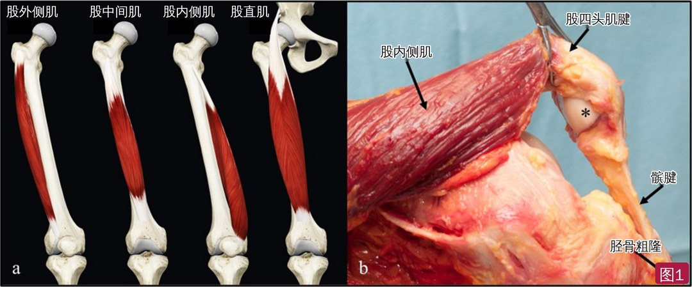
🔖图1：股四头肌解剖。a 四块肌肉（股外侧肌、股中间肌、股内侧肌、股直肌）；b 四块肌肉经髌骨（*）和髌腱共同止于胫骨粗隆（解剖标注已改为中文）
• 与下肢其他肌群相比，股四头肌的随意募集阈值相对较高：在最大随意收缩时，伸膝肌群的平均失活率最高（图 2）。这本来有助于输出更大的伸膝力矩，但也意味着术后随意激活股四头肌本来就难
• Boccia 等发现，与腿举相比，抗阻开链伸膝时股内侧肌和股外侧肌的运动单位放电率和突触输入更高——开链可能更“专门”地激活股四头肌
• 纤维类型不均：股外侧肌约 50% 为 II 型纤维，股直肌可达 62%。股直肌运动后疲劳和损伤可能更大，高速跑等疲劳性训练之间需 72～96 小时恢复；单关节头（如腿举训练）可以 48～72 小时练一次，频率更高
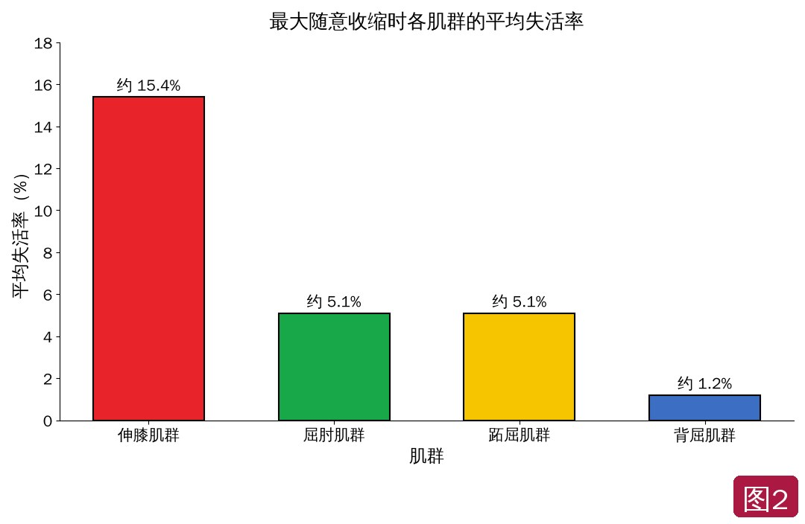
🔖图2：各肌群的平均失活率（按原图数据中文重绘）。伸膝肌群失活比例最大，说明即使受伤或手术前，最大限度地随意激活股四头肌也有难度
在肌肉的理想长度-张力区间训练，能产生更多机械信号转导；已有研究显示，在较长肌肉长度下做抗阻训练，肌肥大效果更好。
• 股直肌是唯一在长度-张力曲线上升支工作的头（图 3a）：躯干屈髋 90°+ 时在屈膝 0°～40° 做开链伸膝，股直肌太短，会出现主动不足、输出下降
• 三块单关节股肌在任何屈膝角度都工作在平台到下降支（图 3b～d）——主动不足只需要考虑股直肌
• 股中间肌：0°～90° 抗阻最有效（半蹲比全蹲带来更多股中间肌区域性肥大）
• 股内侧肌、股外侧肌远端：在60°～110°+ 的较长长度下训练，处于下降支，最利于区域性肥大；屈膝 90° 时股内侧肌肌节比股外侧肌略长，因此全蹲到 140°可能更能刺激股外侧肌远端肥大
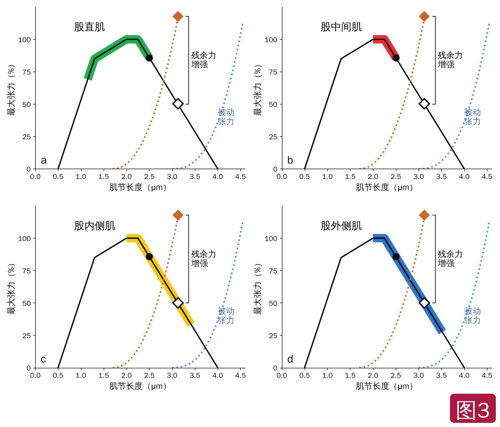
🔖图3：股四头肌各头的长度-张力关系（按原图中文重绘）。粗色带为该肌在功能活动中的工作区间；实心点/空心菱形为参考点；橙色虚线为离心收缩的残余力增强，蓝色虚线为被动张力
• 四块肌肉单独看，内力臂曲线相似：单关节头 0°～30° 略升并达峰，30°～100° 逐渐下降；股直肌在 20°～30° 达峰，曲线更陡（图 4）
• 髌腱内力臂在 0°～30° 升高达峰，30°～100°+ 下降——想优先加载髌腱，起初可以多用小屈膝角度
• 股四头肌腱内力臂在 0°～25° 相对恒定，20° 时峰值大于髌腱；屈膝越深，股四头肌腱相对髌腱的受力越大（图 5a），原因是股四头肌腱内力臂相对变小，同时股四头肌被动张力增加（图 6）
• 所以深屈膝（30°～100°+）可以优先加载股四头肌腱；但如果训练时股四头肌腱部位疼痛，应减小屈膝角度
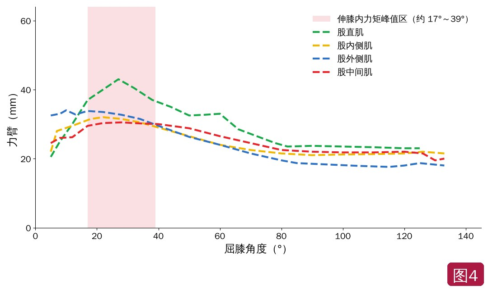
🔖图4：股四头肌各头的内力臂曲线（按原图数据中文重绘）。粉色区为伸膝内力矩峰值对应的屈膝范围
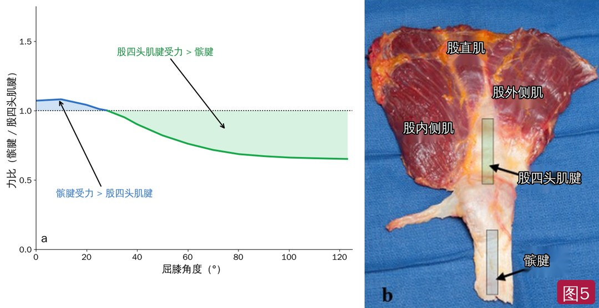
🔖图5：a 股四头肌腱与髌腱的受力比随屈膝角度的变化（按原图中文重绘）——约 25° 以后股四头肌腱受力大于髌腱；b 伸膝装置标本，灰框分别示股四头肌腱和髌腱（标注已改为中文）
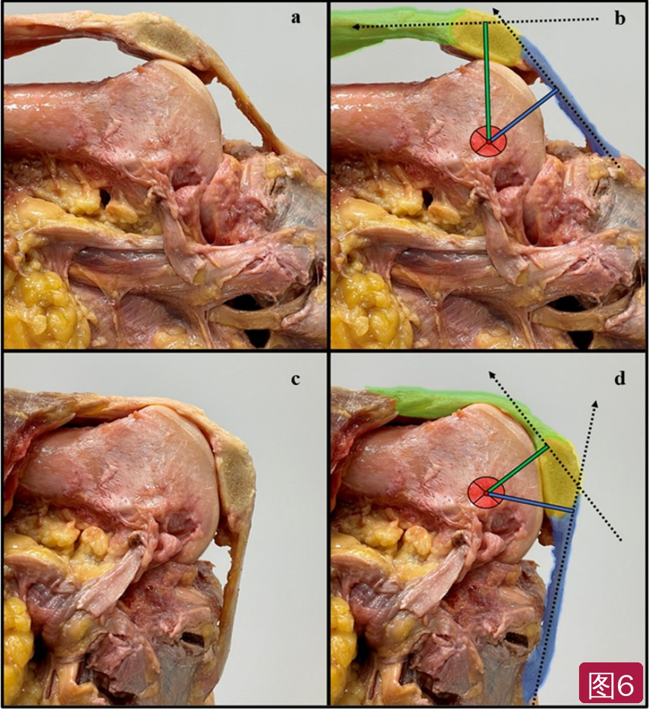
🔖图6：股四头肌腱和髌腱的内力臂。屈膝 0°～30° 时股四头肌腱（绿）内力臂大于髌腱（蓝）（a、b）；屈膝更深时髌腱内力臂更大（c、d）。黄色为髌骨，红圈为估计的关节旋转中心，虚线为股四头肌收缩时腱内合力方向
| 收缩方式 | 特点 | 怎么用 |
|---|---|---|
| 推/克服型等长 | 向固定物体发力；外周肌肉激活更多、到力竭时间更长 | 突破高激活阈值，机械刺激更多已募集的纤维 |
| 退让/保持型等长 | 在外力下维持关节角度；更像离心收缩，激活更少但运动更同步，更快疲劳 | 调节肌腱疼痛、处理 AMI、提高中枢运动兴奋性 |
| 离心 | 有残余力增强，离心 1RM 约比向心 1RM 高 41%；同样输出下激活更少、代谢更省 | 改善运动控制、肥大和力量，带来保护性肌肉结构适应；最终要能承受 >向心 1RM 的离心负荷 |
| 离心准等长（EQI） | 保持退让型等长直到力竭，随后进入不可避免的离心收缩 | 结构和神经肌肉适应与离心相似，但运动后酸痛/疲劳更少；可在预设活动范围内安全施加大负荷 |
| 大负荷慢速（HSRT） | 慢速、高负荷的等张训练 | 治疗取腱部位的髌腱/股四头肌腱病：负荷 ≥70%～100% 向心 1RM |
| 速度训练 | 监测组内动作速度 | 全程用来提高运动单位放电率和发力率（RFD） |
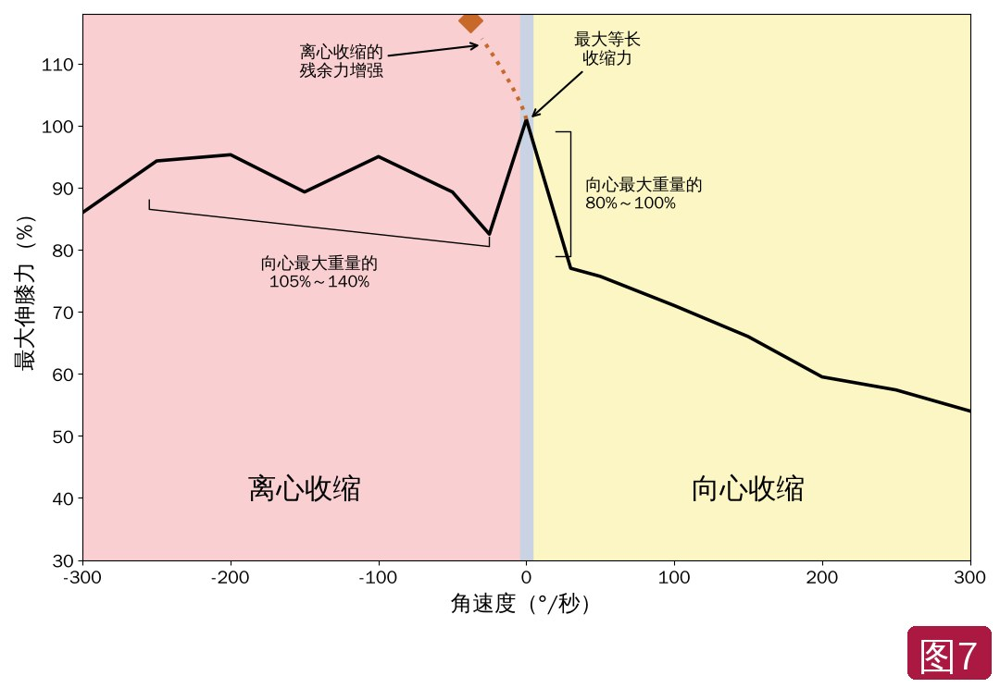
🔖图7：伸膝肌群的力-速度关系（按原图数据中文重绘）。慢速（如最大用力推/克服型等长或 <60°/秒的向心收缩）时向心伸膝力最大；由于残余力增强，离心最大伸膝力高于向心
• 先做需求分析并随进展修改：初次还是翻修、移植物类型、组成和固定方式、合并修复/重建——它们决定移植物韧带化时间、骨隧道稳定性、取腱部位创伤，以及是否存在 BPTB/QT 取腱相关的股四头肌无力
• 识别移植物松弛/失败的不可改变风险因素（关节过度活动、同种异体移植物、腘绳肌腱移植物、半月板切除、胫骨后倾大）；多个因素并存时可调整动作，例如开链伸膝在 0°～45° 比 45°～100°+ 产生更大的 ACL 应变
• 同时安排开链和闭链两条进阶线（图 8），并符合肥大和力量训练的最佳证据；全程用推扫试验和疼痛监测模型量化膝关节激惹程度；同时处理 AMI
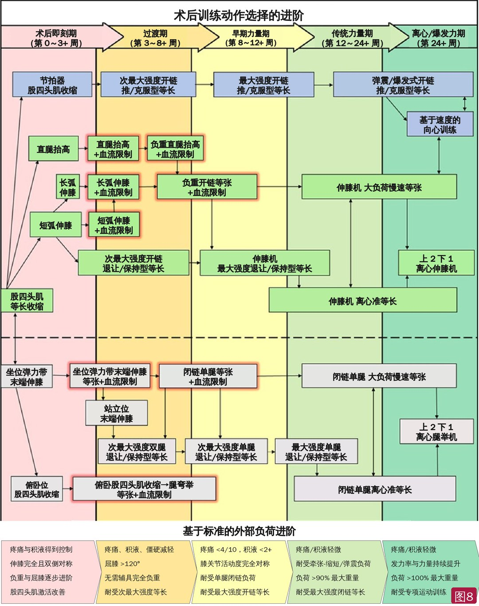
🔖图8：ACL 重建术后股四头肌训练的动作选择进阶（原图逐框替换为中文）。绿框为开链，灰框为闭链，蓝框为发力率进阶，红色光晕框为配合血流限制（BFR）；虚线上方为开链、下方为闭链；底部为各阶段进入下一阶段的标准
首要目标是尽快恢复主动伸膝——哪怕轻微伸膝受限也会改变关节运动学、引起股四头肌抑制，并可能增加骨关节炎风险。鉴于 AMI 和高激活阈值，此期开链可能比闭链更有益；练习要高频率、短时长。
• 股四头肌收缩起步：躯干后靠（屈髋少）有利于股直肌长度-张力；AMI 明显时膝下垫起、屈膝 20°～45°（图 9a），可改善长度-张力和内力臂
• 长时间（45～90 秒以上）退让型等长可改善运动募集；叠加神经肌肉电刺激（NMES）可加快股四头肌力量恢复；用节拍器加快收缩节奏，再进阶到更高节奏的练习
• 能自主收缩后加入直腿抬高：先把髌骨最大限度上滑再抬腿，减少伸膝迟滞；全程股骨轻度外旋 + 踝背屈（图 9b）；从高坐/站立进阶到长坐位，可用长时间保持和/或 BFR 加速疲劳，在膝以远加负荷
• 能耐受就进阶到开链伸膝：可先做 0°～45° 短弧伸膝；屈膝改善后全弧伸膝优于短范围，更能刺激远端纤维；BFR + 接近力竭的低负荷利于肥大
• 45°～60° 次最大退让型等长：处于长度-张力下降支、内力臂较好、伸膝力矩最优，ACL 应变比 0°～45° 小，还可能缓解取腱部位肌腱痛
• 从坐位弹力带末端伸膝（TKE）开始（图 9c、d），优先激活单关节头；靠加大弹力带阻力、延长保持时间或加 BFR 进阶
• 加入俯卧股四头肌收缩：没有视觉反馈，可能改善本体感觉
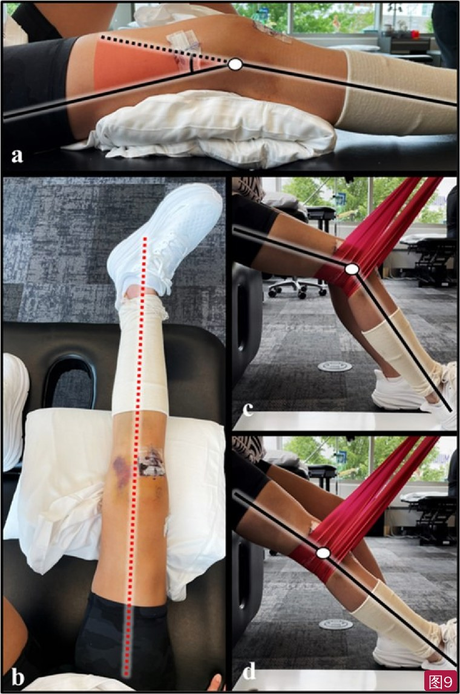
🔖图9：术后即刻期动作。a 屈膝 20°～45° 下做股四头肌收缩；b 直腿抬高时保持股骨轻度外旋和主动踝背屈（红色虚线为中立旋转线）；c、d 坐位弹力带末端伸膝
主动活动度和随意激活恢复后，从“量和多样性”转向可贯穿后续康复的主线进阶。此期关节激惹和积液可能仍在，低负荷 + BFR 可在恢复关节内环境稳定的同时减少萎缩、刺激肥大。
• BFR：非负重股四头肌训练每天 1～2 次，负荷很轻（<20% 向心 1RM），可用较高的个体化加压；每组尽量练到接近力竭（保留 0～2 次）；开链伸膝 + 坐位 TKE 组合可覆盖近端和远端
• 俯卧股四头肌收缩 → 腿弯举 + BFR：最大程度拉长远端股四头肌肌节，促进区域性肥大；俯卧屈膝牵伸、反向北欧挺作为组间负重牵伸，可松动 QT 取腱部位并刺激牵伸介导的肥大
• 开链：从 45°～60° 退让型等长进阶到 60°～90° 推/克服型等长（募集更多），可叠加 NMES
• 闭链：坐位 TKE → 站立 TKE；从非负重到负重关节负荷增幅大，先用退让型等长。以双腿蹲（健侧略垫高，把重量转向术侧）为基础（图 10a），45°～60° 次最大保持，每次 3～6 组 × 45～90 秒
• BPTB/QT 移植物术后，闭链退让型等长每天 2 次、间隔 6～8 小时以上，以优化取腱部位胶原合成；再进阶到分腿蹲（图 10b）减少双侧力量缺失和代偿，前脚垫高可把屈膝从 45°～60° 推进到 60°～90°
重点是消除积液/激惹，同时逐步加载股四头肌。先加屈膝角度，再加外部负荷——更深的屈膝可能更利于肥大；但屈膝角度会改变两根肌腱的受力比，BPTB/QT 术后要经常监测取腱部位。
• 开链：45°～100°+（无合并手术禁忌时）——取腱后深屈膝角度的无力更明显，这个范围 ACL 应变小、远端肥大的长度-张力更好；首选等长和/或大负荷慢速（仍要防前膝痛）
• 次最大退让型等长 → 加负荷到最大用力；保持到接近力竭。当最大开链退让型等长只能保持 20～45 秒时，开始 EQI（图 11d～f）
• 伸膝机 EQI：先在 45°～70° 做，再到更深屈膝（70°～120°+ 可能引起激惹）——因为 45°～100°+ 内力臂在下降、被动张力在增加、离心会增大伸膝装置总受力
• 闭链：选高稳定的单腿动作（腿举等器械或有扶持的负重动作，图 10c、d），稳定性高能提升随意激活和输出；可用下斜楔形垫/垫高足跟增加股四头肌贡献
• 45°～90°+ 次最大到最大退让型等长，在 20～45 秒内接近力竭；屈膝越深，越快力竭。深屈膝下能耐受 20～45 秒的最大保持后，再加外部负荷
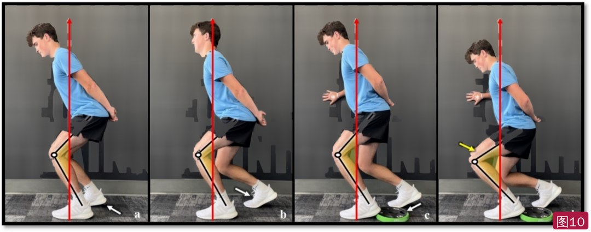
🔖图10：闭链退让/保持型等长进阶。a 小屈膝双腿蹲（健侧垫高）；b 分腿蹲；c 加足跟楔形垫增大屈膝外力矩；d 加深屈膝。白色箭头示通过姿势进阶加载，黄色箭头示加深屈膝，红色箭头为大致地面反作用力方向（背景墙英文字样已抹除）
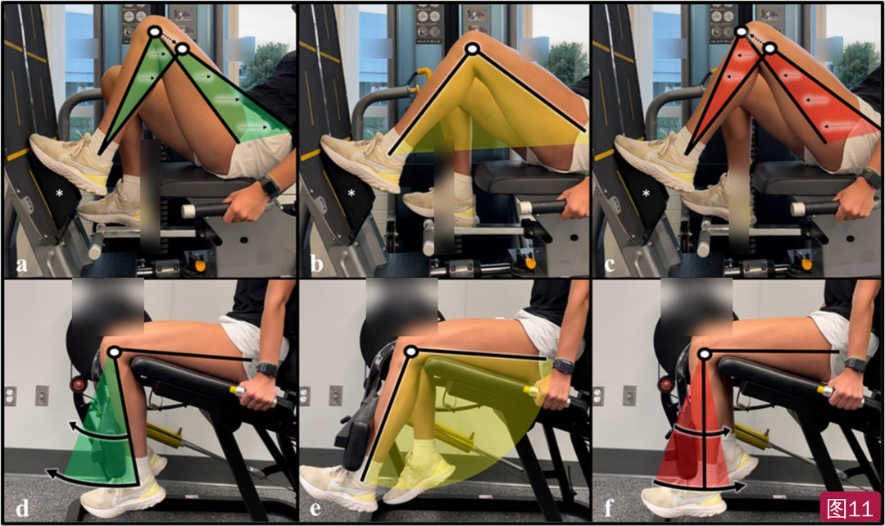
🔖图11：开链与闭链的离心准等长（EQI）。腿举（a～c，*为足跟楔形垫）或伸膝机（d～f）：先向心收缩加载（a、d），再保持退让型等长到力竭（b、e），然后在规定范围内最大限度对抗随之而来的离心收缩（c、f）。绿色为向心，黄色为保持，红色为离心（器械上的品牌字样已模糊处理）
正常愈合时，多数 ACL 移植物在 12 周时已整合，伸膝装置取腱部位已形成瘢痕样肌腱组织，可全面过渡到最大用力加载。此期要重视休息恢复，按酸痛和疲劳调整安排，并经常监测膝关节激惹。
• 开链：继续 45°～100°+；伸膝机 EQI 在 20～45 秒内达到等长力竭；更正式的大负荷慢速（>70%～80% 向心 1RM）练到接近力竭——此负荷下向心速度 <60°/秒，股四头肌内张力最大
• 闭链：大屈膝外力矩的单腿动作（单侧比双侧更能提升随意募集）；用楔形垫增加屈膝力矩，逐步加深屈膝的最大保持——注意深屈膝会增加伸膝装置的压力/剪切力
• 负荷耐受改善后：术侧最大保持 20～45 秒再对抗离心到 60°～90°+（腿举 EQI，图 11a～c）；大负荷慢速在 45°～120°+，每组可完成次数不超过 4～6 次
• 能做大负荷训练（>85% 向心 1RM）后，向与高水平功能任务相似的受力进阶。切步/转身时髌股关节力可达体重的 13～18 倍
• 深蹲到 120° 屈膝、负荷 ≥85% 1RM 时髌股受力与切步/转身相似；而 90° 时最大开链推/克服型伸膝等长只有约 7～8 倍体重——所以闭链要进阶到 120°+ 屈膝；非全深度的开链和闭链要进阶到 >100% 向心 1RM 的离心专项训练
• 离心专项（“上 2 下 1”）：双腿完成向心，再撤去健侧，由术侧单独完成离心（图 12）。闭链 0°～110°+，开链 45°～100°+；并与减速/变向任务结合
• 爆发力和速度训练：ACLR 后股四头肌 RFD 长期受损（BPTB/QT 更明显）。用跳跃训练机或带线性位移传感器/加速度计的杠铃（图 13），强调每次最大用力，速度下降 10% 即停止该组；再与弹震/增强式结合
• 高速跑：为股直肌做准备，逐级暴露；高速跑要求股四头肌反复高负荷离心，起初两次疲劳性高速跑之间可能需要 3～4 天恢复，直到出现重复训练效应
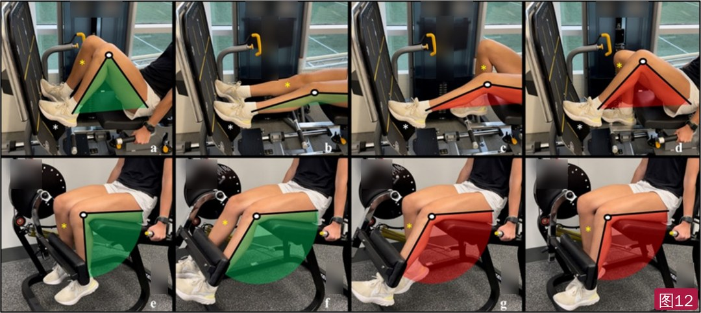
🔖图12：离心专项训练的推荐技术（负荷 >术侧向心 1RM）。腿举（a～d，*为足跟楔形垫）或伸膝机（e～h）：双腿从底部向心推到顶部（a→b、e→f），撤去健侧（c、g，黄色*），术侧单独离心下放（d、h）。绿色为向心，红色为离心（器械上的品牌字样已模糊处理）
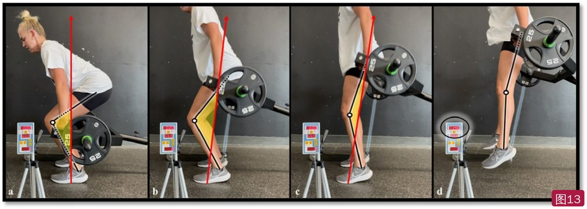
🔖图13：用线性位移传感器/加速度计进行速度训练（a～d）。强调每次都最大用力；d 中黑圈为速度反馈屏，蓝线为连接杠铃与传感器的拉绳，黄色区域示屈膝外力矩
• 证据级别低：5 级临床评论，框架由基础科学、力量训练文献和作者机构经验推导而来，没有临床试验验证其能否更好地恢复股四头肌体积、力量或重返运动；EQI 等方法作者自己也说是“理论上”应采用
• 亮点：把解剖、神经支配、纤维类型、长度-张力、内力臂、两根肌腱的受力比和收缩方式逐一落到“什么角度、什么方式、练哪块肌肉”上，开链、闭链两条线清楚，并兼顾移植物类型（BPTB/QT 取腱部位）
• 剂量细节在附件里：正文反复引用附录 A（具体组次、频率、强度），但附录 A 和 25 段视频只是在线附件，PDF 中没有，单看正文较难直接照做
• 部分数字不统一：HSRT 负荷前面写 ≥70%～100% 向心 1RM，后面写 >70%～80%；股四头肌腱力臂一处写 0°～25° 相对恒定、20° 时大于髌腱，图 6 图注写 0°～30° 都大于髌腱
• 图表多为示意：图 3、图 5a、图 7 是基于文献的概念图，不是本研究测量数据；本文重绘时按原图读数，数值仅为近似
• 小瑕疵：“1-repitition”应为 repetition；“does effect”应为 affect；图 6 图注中个别分号应为逗号
① 先懂肌肉：股直肌跨两关节，偏爱屈髋+伸膝和高速动作；三块股肌在长位置更易长肉
② 角度选择：0°～45° 开链伸膝 ACL 应变大，45°～100°+ 更安全、更利于远端肥大；股四头肌腱痛就减小屈膝
③ 即刻期：尽快恢复伸膝，股四头肌收缩 + NMES + 节拍器，直腿抬高、短弧伸膝、坐位末端伸膝
④ 过渡期：低负荷 + BFR 练到接近力竭；闭链从双腿到分腿的长时间退让型等长
⑤ 早期力量期：先加屈膝角度再加负荷；最大保持只能撑 20～45 秒时开始 EQI
⑥ 传统力量期：大负荷慢速 >70%～80% 1RM、单腿、楔形垫、每组 ≤4～6 次
★ 24 周以后：>100% 向心 1RM 的“上 2 下 1”离心、速度训练（速度降 10% 停组）、增强式和高速跑
欢迎关注骨科康复小黄公众号，获取更多物理治疗的专业知识！
📄参考文献：
Solie B, Carlson M, Doney C, Kiely M, LaPrade R. Oh, My Quad: A Clinical Commentary and Evidence-Based Framework for the Rehabilitation of Quadriceps Size and Strength after Anterior Cruciate Ligament Reconstruction. Int J Sports Phys Ther. 2024;19(12):1600-1628. PMCID: PMC11611527.
文中 13 张图片均来自原文：图 2、3、4、5a、7 按原图数据中文重绘，图 8 逐框改为中文，图 1、5b 标注改为中文，图 10～12 背景及器械英文已去除或模糊，仅用于学术交流。